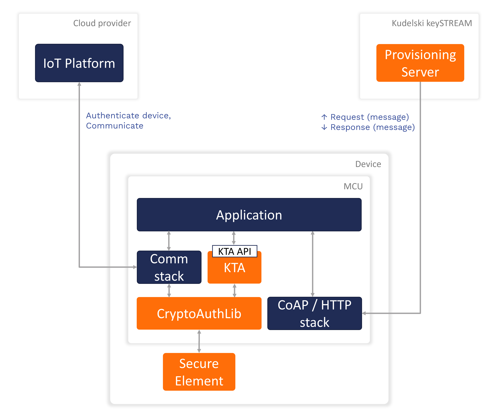

keySTREAM Integration Guide — MCU with Wi-Fi / Ethernet
This page covers integrating the keySTREAM Trusted Agent (KTA) on an MCU that connects directly to the keySTREAM cloud over Wi-Fi or Ethernet.
Use this page when your device has its own IP connectivity and does not need an intermediate gateway.
If your MCU has no direct internet access, use Closed Network (Gateway Model).

Software Architecture — MCU with Direct Cloud Communication
Quick Understanding
| Question | Answer |
| What is Direct Cloud? | MCU talks to keySTREAM cloud directly over Wi-Fi or Ethernet. |
| Which protocols? | HTTP (port 80) or CoAP (port 38292). |
| What do I implement? | 5 TCP socket wrapper functions + 1 sleep function. |
| Is there a ready-made example? | Yes — see reference implementations listed below. |
Supported Protocols
| Protocol | Host | Port | Path |
| HTTP | icph.mss.iot.kudelski.com | 80 | /lp1 |
| CoAP | icpp.mss.iot.kudelski.com | 38292 | /lp1 |
Recommendation: Use HTTP – it's simpler and works with any TCP socket API.
How It Works
Your App
│
▼
ktaKeyStreamInit() → ktaKeyStreamFieldMgmt()
│
▼
commInit() → commMsgExchange() → commTerm() ← provided by KTA
│
▼
salComInit() → salComConnect() → salComWrite() → salComRead() → salComTerm()
│
▼
YOUR MCU's TCP socket API (Wi-Fi or Ethernet)
You only implement the bottom layer – 5 functions that wrap your MCU's network driver.
Step 1: Implement 5 SAL Functions
Create one file: COMMSTACK/KS/http/salapi/<your_platform>/k_sal_com.c
Header: COMMSTACK/KS/http/salapi/include/k_sal_com.h
| # | Function | What to do |
| 1 | salComInit(connectTimeout, readTimeout, &pInfo) | Allocate a connection context struct |
| 2 | salComConnect(pInfo, host, port) | DNS resolve + open TCP socket + connect |
| 3 | salComWrite(pInfo, buffer, length) | Send bytes over TCP |
| 4 | salComRead(pInfo, buffer, &length) | Receive bytes from TCP |
| 5 | salComTerm(pInfo) | Close socket + free context |
All functions return E_K_COMM_STATUS_OK on success.
Example template:
#include "k_sal_com.h"
#include <your_mcu_tcp_api.h>
typedef struct {
int socket;
uint32_t connectTimeout;
uint32_t readTimeout;
} TComInfo;
TKCommStatus salComInit(uint32_t xConnectTimeoutInMs, uint32_t xReadTimeoutInMs, void** xppComInfo)
{
TComInfo* pInfo = (TComInfo*)malloc(sizeof(TComInfo));
pInfo->connectTimeout = xConnectTimeoutInMs;
pInfo->readTimeout = xReadTimeoutInMs;
pInfo->socket = -1;
*xppComInfo = pInfo;
return E_K_COMM_STATUS_OK;
}
TKCommStatus salComConnect(void* xpComInfo, const uint8_t* xpHost, const uint8_t* xpPort)
{
TComInfo* pInfo = (TComInfo*)xpComInfo;
pInfo->socket = your_tcp_connect((char*)xpHost, atoi((char*)xpPort));
return (pInfo->socket >= 0) ? E_K_COMM_STATUS_OK : E_K_COMM_STATUS_ERROR;
}
TKCommStatus salComWrite(void* xpComInfo, const uint8_t* xpBuffer, size_t xBufferLen)
{
TComInfo* pInfo = (TComInfo*)xpComInfo;
int sent = your_tcp_send(pInfo->socket, xpBuffer, xBufferLen);
return (sent == (int)xBufferLen) ? E_K_COMM_STATUS_OK : E_K_COMM_STATUS_ERROR;
}
TKCommStatus salComRead(void* xpComInfo, uint8_t* xpBuffer, size_t* xpBufferLen)
{
TComInfo* pInfo = (TComInfo*)xpComInfo;
int received = your_tcp_recv(pInfo->socket, xpBuffer, *xpBufferLen, pInfo->readTimeout);
if (received <= 0) return E_K_COMM_STATUS_TIMEOUT;
*xpBufferLen = (size_t)received;
return E_K_COMM_STATUS_OK;
}
TKCommStatus salComTerm(void* xpComInfo)
{
TComInfo* pInfo = (TComInfo*)xpComInfo;
your_tcp_close(pInfo->socket);
free(pInfo);
return E_K_COMM_STATUS_OK;
}
Also create k_sal_os.c with one function:
#include "k_sal_os.h"
void salTimeMilliSleep(const TKSalMsTime xWaitTime)
{
your_delay_ms(xWaitTime);
}
Reference implementations you can copy from:
- Microchip:
COMMSTACK/KS/http/salapi/microchip/k_sal_com.c
- STM32:
COMMSTACK/KS/http/salapi/stm/aws/k_sal_com.c
- POSIX/Linux:
COMMSTACK/KS/http/salapi/libc/k_sal_com.c
Step 2: Configure ktaConfig.h
Open SOURCE/include/ktaConfig.h and verify these are set:
#define C_KTA_APP__KEYSTREAM_HOST_HTTP_URL (const uint8_t*)"icph.mss.iot.kudelski.com"
#define C_KTA_APP__DEVICE_PUBLIC_UID "your_fleet_profile_uid" // from keySTREAM portal
#define NETWORK_STACK_AVAILABLE
Step 3: Call KTA After Network Is Up
#include "ktaFieldMgntHook.h"
void app_main(void)
{
your_network_init();
ktaKeyStreamInit();
ktaKeyStreamFieldMgmt(false, &ksStatus);
while (1) {
ktaKeyStreamFieldMgmt(true, &ksStatus);
your_delay_ms(60000);
}
}
Build Setup
Add these to your project:
Source files:
COMMSTACK/KS/http/comm_if.c
COMMSTACK/KS/http/http.c
COMMSTACK/KS/http/salapi/<your_platform>/k_sal_com.c
COMMSTACK/KS/http/salapi/<your_platform>/k_sal_os.c
APPS/common/KudelskiTrustedAgent_ns/ktaFieldMgntHook.c
Include paths:
SOURCE/include/
COMMSTACK/KS/http/include/
COMMSTACK/KS/http/salapi/include/
APPS/common/KudelskiTrustedAgent_ns/include/
Troubleshooting
| Problem | Fix |
commInit fails | Check Wi-Fi/Ethernet has IP before calling KTA |
Timeout on commMsgExchange | Verify port 80 is not blocked by firewall |
Build error: comm_if.h not found | Add COMMSTACK/KS/http/include/ to include paths |
| KTA returns error before network call | Check KTA SAL (crypto/storage) is implemented |
Summary
| What | Files |
| You implement | k_sal_com.c (5 functions) + k_sal_os.c (1 function) |
| You configure | ktaConfig.h (server URL + profile UID + NETWORK_STACK_AVAILABLE) |
| You call | ktaKeyStreamInit() then ktaKeyStreamFieldMgmt() |